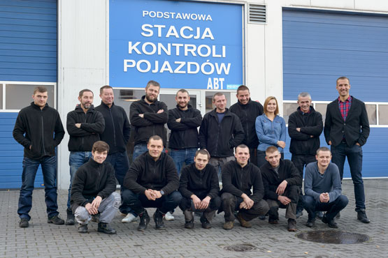

Warsztat samochodowy AUTO ZAGÓRSKI
Mechanika samochodowa, rzetelna wycena i wyższa jakość obsługi.
Wyznacz trasęJak dojechać?
Warsztat samochodowy
AUTO ZAGÓRSKI
ul. Szamarzewskiego 42, 60-552 Poznań
Wyznacz trasę dojazdu
Godziny pracy
Poniedziałek-Piątek: 7-20
Sobota: 9-14
Niedziela i święta: nieczynne
Zadzwoń do nas
Zakres usług warsztatu samochodowego
Rzetelna i bezpłatna wycena napraw, atrakcyjne akcje promocyjne, przyjazny personel i sympatyczna atmosfera.
Mechanika samochodowa
hamulce • zawieszenie • elektryka • elektronika • pełna diagnostyka komputerowa • odgrzybianie klimatyzacji • pełen zakres naprawy klimatyzacji • naprawa silników • wymiana rozrządów • wymiana olejów, płynów, filtrów • wymiana amortyzatorów • montaż radioodbiorników • sprawdzanie na hamowni całego układu hamulcowego • sprawdzanie amortyzatorów • cała linia diagnostyczna • ustawianie zbieżności • ustawianie geometrii
Serwis klimatyzacji
sprawdzanie szczelności układu • odgrzybianie • uzupełnianie czynnika chłodzącego
Serwis opon
sezonowa wymiana opon • komputerowe wyważanie • przechowywanie opon

Wyższa jakość obsługi
W warsztacie samochodowym AUTO ZAGÓRSKI
spodziewaj się wyższej jakości obsługi.
"Wasze opinie są dla nas bardzo ważne. Dzięki nim bardziej się staramy."
Tomasz Zagórski, właściciel warsztatu
Warsztat samochodowy AUTO ZAGÓRSKI
Nasza stacja kontroli pojazdów została uroczyście otwarta w grudniu 2014 r. W ten sposób sieć warsztatów samochodowych AUTO ZAGÓRSKI rozbudowała się o kolejny, nowoczesny obiekt.
Warsztat samochodowy na ulicy Szamarzewskiego cieszy się uznaną renomą. Pomagamy kierowcom, oferując szeroki wachlarz usług. W skład sieci Auto Zagórski wchodzą warsztaty samochodowe i stacja kontroli pojazdów. Sieć działa od wielu lat w Poznaniu. Mamy rzesze stałych klientów. Dołącz do zadowolonych klientów naszej firmy.
-

- 
-

Często zadawane pytania
Co to jest przegląd techniczny samochodu?
Podczas przeglądu technicznego sprawdzane są najważniejsze układy pojazdu. Ma on zasadnicze znaczenia dla bezpieczeństwa oraz polepszenia walorów użytkowych.
Czy wycenę naprawy uzyskam przez telefon?
Wstęną wycenę możesz usyzkać przez telefon, jednak, pełna informacja możliwa jest tylko po oględzinach przez mechanika.
Czy w warsztacie mogę zapłacić kartą?
W warsztacie samochodowym oferujemy tylko płatność gotówką.
Czy po naprawie możecie od razu wykonać badanie techniczne?
Tak! Zapraszamy na stację kontroli pojazdów AUTO ZAGÓRSKI. Stacja mieści się w bezpośrednim sąsiedztwie (ok. 100 m) naszego warsztatu.